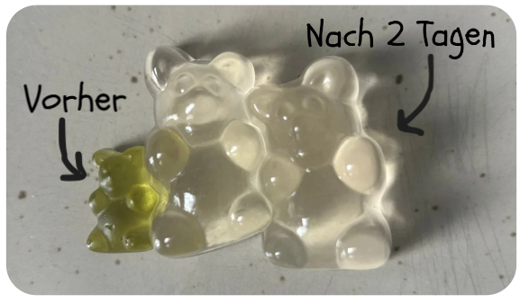

Das Gummibärchen-Experiment
Heute ist der 1. Advent - jeden Adventssonntag erscheint hier nun ein neuer KABU-Beitrag.
Für die diesjährige Weihnachtszeit hat sich KABU was ganz besonderes überlegt: für diesen und die nächsten 3 Sonntage gibt es jeweils ein kleines Experiment hier in der App!
Gummibärchen-Experiment
Heute zeigt dir KABU, wie du Gummibärchen über Nacht wachsen lassen kannst!
Du brauchst dafür nur:
- Gummibärchen
- eine Schale mit Wasser

Los geht’s
- Lege die Gummibärchen in die Schale mit Wasser.
- Nach ein paar Stunden kannst du bereits nachsehen, ob sich schon etwas verändert hat.
- Nach zwei Tagen hat sich die Größe der Gummibärchen stark verändert.
Juhu, jetzt sind es riesige Gummibärchen! Wusstest du bereits, wie du Gummibärchen wachsen lassen kannst?

Schmeiße die Gummibärchen nach dem Versuch weg! Diese sind nicht mehr zum Verzehr geeignet!
💭 RoboBoard Schmeiße die Gummibärchen nach dem Versuch weg! Diese sind nicht mehr zum Verzehr geeignet!
Wenn du weitere Ideen für Experimente hast, dann schreibe gerne der KABU-Redaktion!